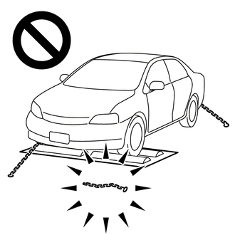
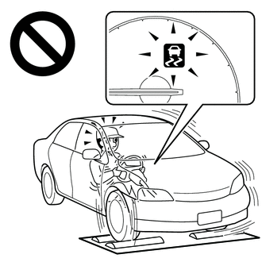

PRECAUTION FOR DISCONNECTING CABLE FROM NEGATIVE AUXILIARY BATTERY TERMINAL
Note
When disconnecting the cable from the negative (-) auxiliary battery terminal, initialize the following system(s) after the cable is reconnected:
| System | See Procedure |
|---|---|
| Lane Departure Alert System (w/ Steering Control) | |
| Intelligent Clearance Sonar System | |
| Parking Assist Monitor System | |
| Simple Intelligent Parking Assist System | |
| Power Door Lock Control System | |
| Pre-crash Safety System | |
| Adaptive High Beam System |
TROUBLESHOOTING PRECAUTIONS
When there is a malfunction with terminal contact points or part installation problems, removal and installation of the suspected problem parts may return the system to the normal condition either completely or temporarily.
In order to determine the malfunctioning area, be sure to check the conditions at the time the malfunction occurred, such as DTC output and Freeze Frame Data, and record it before disconnecting each connector or removing and installing parts.
Since the system may be influenced by malfunctions in systems other than the brake control system, be sure to check for DTCs in other systems.
HANDLING PRECAUTIONS
Do not remove or install electronically controlled brake system parts such as the steering angle sensor, yaw rate and acceleration sensor (airbag sensor assembly) or brake pedal stroke sensor assembly except when required, as they need to be adjusted correctly after removal and installation.
Be sure to perform preparation before work and confirmation after work is completed by following the directions in the repair manual when working on the electronically controlled brake system.
When removing/installing or replacing an electronically controlled brake system related component, disconnect the cable from the negative (-) auxiliary battery terminal before performing the procedure.
Note
After turning the power switch off, waiting time may be required before disconnecting the cable from the negative (-) auxiliary battery terminal. Therefore, make sure to read the disconnecting the cable from the negative (-) auxiliary battery terminal notice before proceeding with work.
If the skid control ECU (brake booster with master cylinder assembly), brake booster pump assembly, brake actuator assembly or a sensor has been removed and installed, it is necessary to check the system for problems after the parts have been reassembled. Check for DTCs using the GTS. Also check that the system functions and signals received by the ECU are normal using Test Mode (Signal Check).
Tech Tips
If a Test Mode (Signal Check) inspection is not performed, a sensor not calibrated malfunction DTC may be stored even if the skid control ECU (brake booster with master cylinder assembly) and all sensors are normal.
If the brake pedal is depressed before the brake control system is prepared to operate, the pedal stroke may seem unusually long or short. This is due to the fact the stroke simulator cut solenoid has not yet operated and is not a malfunction.
After the power switch is turned on (IG) or the brake pedal is depressed twice or more, the stroke simulator will operate and the brake pedal stroke will remain consistent.
DTC PRECAUTION
Warnings for some DTCs cannot be cleared by only repairing the malfunctioning parts. If the warning is displayed even after repair work, the DTC should be cleared after turning the power switch off.
Note
If a DTC for a malfunctioning part reappears after it is cleared, then it has been stored again.
When 2 or more DTCs are detected, perform circuit inspections one by one until the problem is identified.
CHASSIS DYNAMOMETER PRECAUTION
Enter Inspection Mode to disable TRC and VSC operation when using a chassis dynamometer.
Refer to Inspection Mode Procedure: Click here
CAUTION:

Do not use the drum tester with any of the lock chains disconnected.
Using the drum tester with a lock chain disconnected could cause the vehicle to begin moving unexpectedly.

Do not use the drum tester while the TRC or VSC is able to operate.
TRC or VSC operation could cause the vehicle to begin moving unexpectedly.
DISABLING AND ENABLING OF TRC AND VSC BY OPERATION OF VSC OFF SWITCH (COMBINATION SWITCH ASSEMBLY)
Switching of mode
Operating the VSC OFF switch (combination switch assembly) switches the system between normal mode, TRC off mode and VSC off mode.
Normal mode
If the VSC OFF switch (combination switch assembly) is pressed when in TRC off mode or VSC off mode, the system enters normal mode.
In normal mode, TRC and VSC are enabled.
The system is set to normal mode when the power switch is turned on (IG).
TRC off mode
If the VSC OFF switch (combination switch assembly) is pressed when in normal mode, the system enters TRC off mode. When in TRC off mode, TRC is disabled and the multi-information display in the combination meter assembly displays "Traction Control Turned Off".
When the vehicle reaches a certain vehicle speed when in TRC off mode, the system automatically returns to normal mode.
VSC off mode
When the VSC OFF switch (combination switch assembly) is pressed and held for 3 seconds or more with the vehicle stopped, the system enters VSC off mode. When in VSC off mode, TRC and VSC are disabled, the multi-information display in the combination meter assembly displays "Traction Control Turned Off" and the VSC OFF indicator light is illuminated.
The system does not automatically return to normal mode based on vehicle speed when in VSC off mode.
CAN COMMUNICATION SYSTEM PRECAUTIONS
The CAN communication system is used for communication between the skid control ECU (brake booster with master cylinder assembly), steering angle sensor, yaw rate and acceleration sensor (airbag sensor assembly) and other ECUs. If there is a malfunction in a CAN communication line, corresponding DTCs for the communication line are output.
If any CAN communication DTCs are output, repair the malfunction, then troubleshoot the VSC system while communication is normal.
In order to enable CAN communication, a specific type of wiring is used for the CAN communication lines. The wiring used for each communication line is a twisted pair of wires that have an equal length. A bypass wire should not be used, because the data being transmitted will be corrupted.